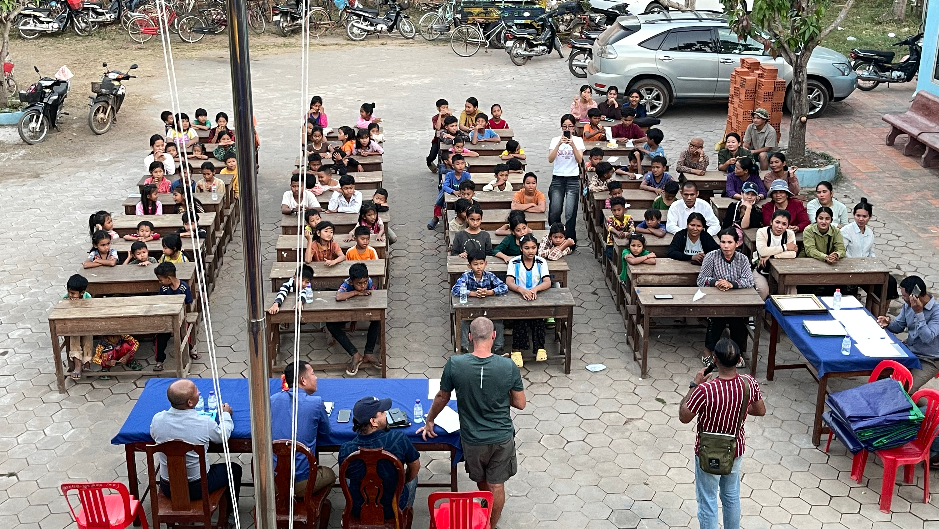

Located 16 km outside Siem Reap City, Savong Education Bakong is a second, dedicated rural campus. Here, over 200 village children gather daily to learn conversational English, practice team athletics, and master digital skills — completely free of charge.
Daily grammar, vocabulary, and active conversational practice so rural students can communicate with confidence and qualify for hospitality, trade, and vocational careers.
Regular team sports and soccer tournaments that instill mutual respect, leadership, mental focus, and healthy physical routines outside the classroom.
Clean hygiene practices, computer literacy and typing, public speaking, and mentorship that empower rural young adults for real-world independence.
The first Savong school was originally established closer to Siem Reap City. However, children in remote agricultural villages in Prasat Bakong district had no daily transportation to reach town. Savong Education Bakong was built as a distinct, second campus to bring high-quality supplementary education directly into this rural farming community.
In Prasat Bakong, families depend almost entirely on small-scale rice farming and subsistence agriculture. When local village schools lack resources, children often face an early ceiling: leaving classrooms young to work the family fields.
Education is the single greatest economic multiplier in the developing world. Just 16 kilometers down the road in Siem Reap sits an international gateway of eco-tourism, culinary arts, healthcare, technology, and global commerce. For a young person here in Bakong, speaking English and typing on a computer is the dividing line between generational poverty and a secure career.
Unlike large international NGOs where funding is absorbed by administrative layers and overseas marketing, Savong Education Bakong is 100% locally anchored. Every dollar contributed goes straight to our Bakong classroom floor: providing textbooks, keeping classroom fans running, and paying reliable stipends to Cambodian tutors.
In our rural Bakong classrooms, five dollars provides a full term of workbooks, pens, and pencils for a student. Small support creates immense leverage.

Dedicated local tutors empowering students every day in Bakong.

Savong Education Bakong is the second, rural location under Savong Organization Cambodia (registered NGO No. 1372). We provide completely free English classes, athletic programs, and practical life skills to children who live far outside Siem Reap City.
Our students walk or bicycle from surrounding farming villages in Prasat Bakong. There are no expensive administrative layers, corporate boards, or overseas fundraising fees. We show up, we teach, and we keep the gates open every day.
"A student in a rural village who learns English, plays sports, and builds confidence has a completely different future ahead of them."
— Savong Education Bakong · Prasat Bakong, Cambodia

Director & Founder
Prasat Bakong Campus, Siem Reap
When previous foreign management ceased operations, the children of Prasat Bakong were in danger of losing their education. Vong Svay stepped forward to keep the gates of this second campus open.
A small business owner and Siem Reap local, Vong personally funded and managed the Bakong school out of his own pocket to protect these rural students' progress. Today, Savong Education Bakong operates under registered NGO #1372, relying on direct donor gifts to pay local teachers and supply study materials.
Real moments of study, connection, and progress captured directly at our second location in Prasat Bakong.

Computer Learning Lab
Equipping rural students with typing, basic office software, and digital literacy.

Daily Academic Focus
Free notebooks, textbooks, pens, and pencils provided for every single child.
Savong Education Bakong warmly welcomes international and local volunteers. Whether you have one week, two weeks, or a whole month, your presence in our rural classrooms offers students invaluable conversational English practice.
Submit our short Google Form with your availability and background.
Our campus is roughly 25 minutes east of Siem Reap center, easily reached by tuk-tuk or scooter.
No complex red tape. Jump straight into hands-on conversational English and sports.

Key information about our second rural campus, impact, donations, and visiting.
Savong Education Bakong is our dedicated second, more rural location situated in Prasat Bakong district, approximately 16 kilometers east of downtown Siem Reap. While the original first school was based in Siem Reap City, our Bakong campus was established specifically to serve remote farming villages where children cannot commute into town for supplementary English and computer classes.
Yes, 100% free. More than 200 children from surrounding agricultural villages in Prasat Bakong attend daily English classes, athletic training, and computer sessions without paying any tuition, enrollment charges, or book fees.
Yes. Savong Education Bakong operates legally under Savong Organization Cambodia with NGO Registration No. 1372 issued by the Ministry of Interior of the Kingdom of Cambodia.
100% of donor funding goes directly to classroom needs at the Bakong campus: paying monthly stipends to local Cambodian teachers, providing free workbooks and pencils, covering electricity for fans and laptops, and maintaining clean drinking water and sanitary restrooms. There is zero administrative overhead or foreign agency commission.
Volunteers can apply directly through our Online Volunteer Form. A formal teaching degree is not necessary; fluent spoken English, enthusiasm, and patience are what count.
Stays are flexible (from 1 week to several months), and we assist volunteers with transport advice from downtown Siem Reap to the Bakong campus.
The school is in Prasat Bakong district, approximately 20 to 16 kilometers (around 25–30 minutes) east of Siem Reap center, close to the ancient Roluos temple cluster. It is easily accessible via National Road 6.
We are an approachable local Cambodian team. Message us directly about donations, volunteering, or visits to our second campus.
.jpg)